Tư Liệu Ảnh Về Bảo Tàng Thành Cổ
 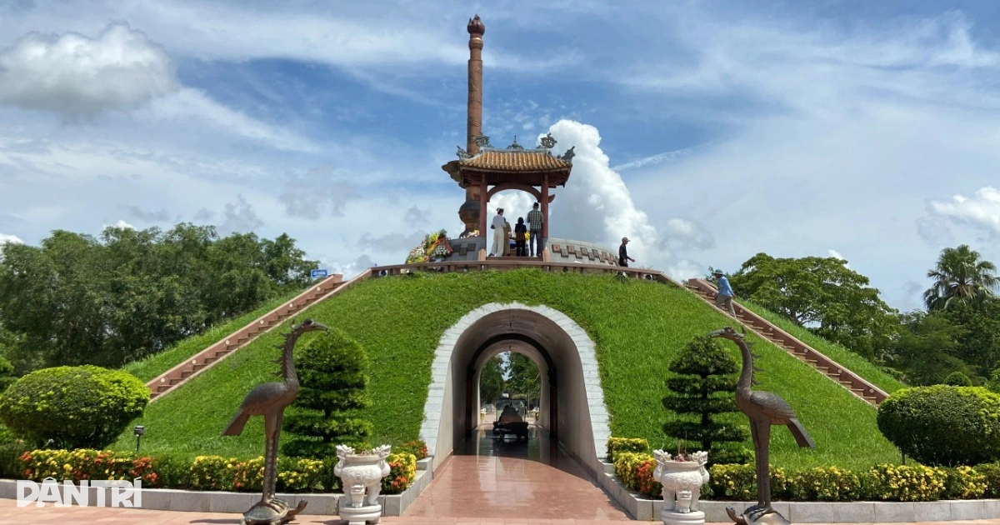
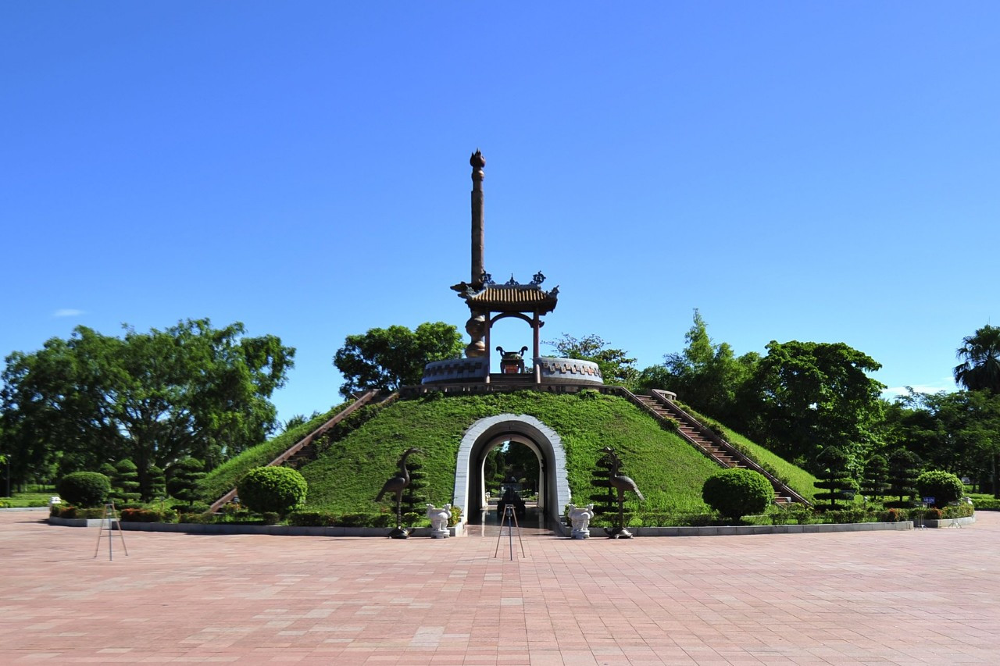
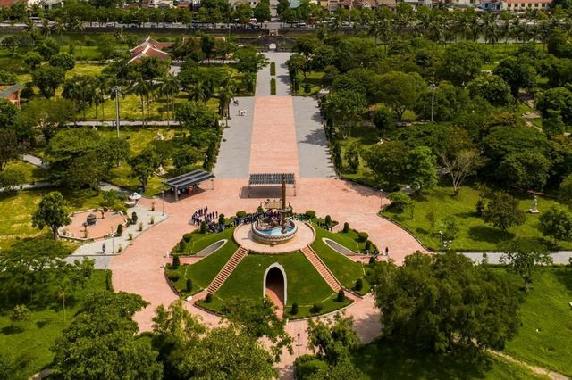
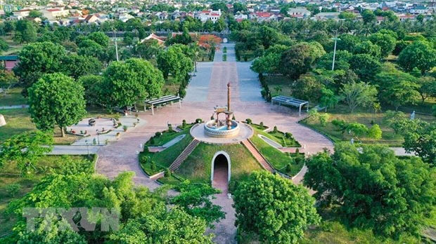
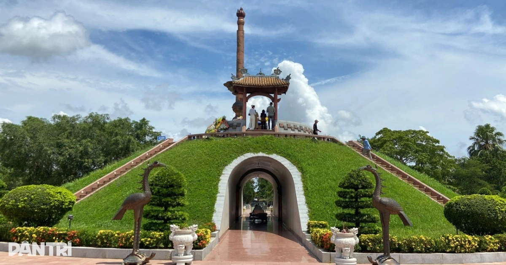
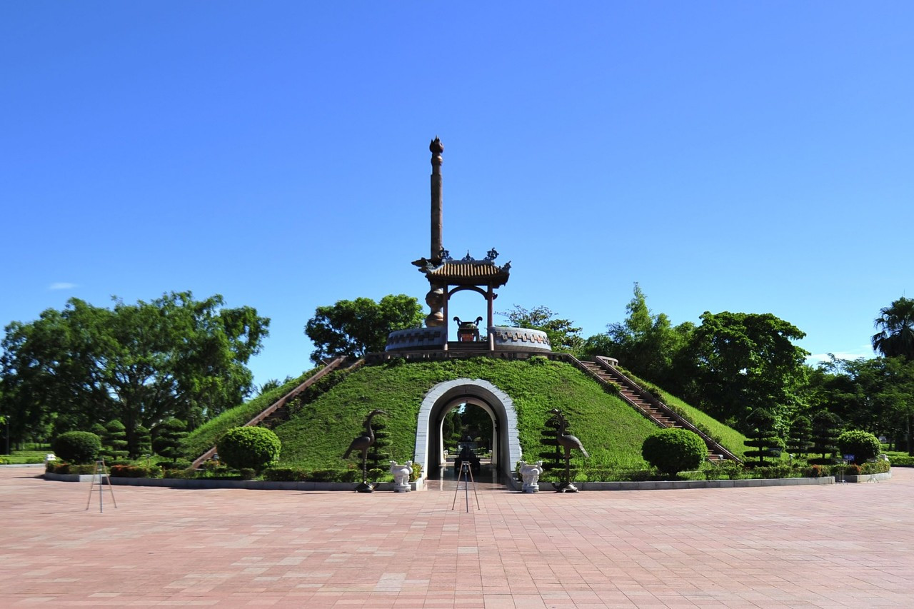
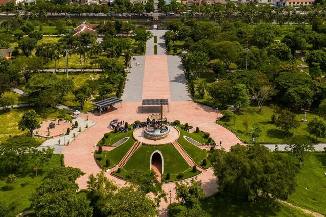
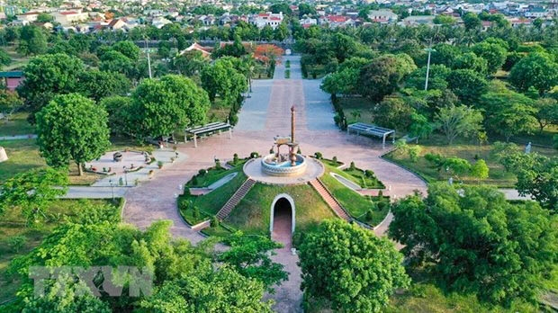

Nguồn ảnh: vov.vn, dantri.com, viptrip.vn, sovaba.travel, baodantoc.vn
-Khu trung tâm chủ yếu là Đài tưởng niệm (hay còn gọi là Bia tưởng niệm trung tâm, Đài tưởng niệm các anh hùng liệt sĩ), được thiết kế theo triết lý âm dương truyền thống :
+Hình bát giác tượng trưng cho bát quái.
+Bốn lối đi lên đại diện cho tứ tượng.
+Một tầng lưỡng nghi để dâng hương.
+Phía trên là mái đình cách điệu với bình thái cực.
+Đài được coi như ngôi mộ chung (mộ tập thể) cho hàng ngàn chiến sĩ (ước tính hơn 4.000 người) đã ngã xuống trong trận 81 ngày đêm.
+Đặc biệt, để lên đài, du khách phải đi qua 81 bậc thang – con số tượng trưng cho 81 ngày đêm chiến đấu anh dũng (từ 28/6 đến 16/9/1972). Xung quanh đài có 81 bức phù điêu khắc ghi lại từng ngày tháng của cuộc chiến.
-Khởi công và xây dựng: Bắt đầu từ năm 1992 (lễ khởi công khu tưởng niệm di tích), Đài tưởng niệm được hoàn thành và khánh thành chính thức vào năm 1997 (theo một số tài liệu).
-Mục đích: Tri ân, tưởng niệm các liệt sĩ hy sinh trong trận Thành cổ 1972 – một trong những trận đánh ác liệt nhất Chiến tranh Việt Nam, với hàng trăm nghìn tấn bom đạn (tương đương 7 quả bom nguyên tử Hiroshima).
-Khu vực này là phần của quá trình trùng tu, bảo tồn di tích từ thập niên 1990, sau khi Thành cổ bị san phẳng gần như hoàn toàn trong chiến tranh.
Khu trung tâm là điểm nhấn chính khi tham quan Thành cổ, thu hút hàng nghìn du khách mỗi năm, đặc biệt vào các dịp lễ lớn như 27/7 (Ngày Thương binh - Liệt sĩ) hoặc kỷ niệm 81 ngày đêm. Du khách thường dâng hương, thắp nến, thả hoa trên sông Thạch Hãn gần đó để tưởng niệm. Đây cũng là nơi giáo dục truyền thống yêu nước, với không khí thiêng liêng, giúp mọi người cảm nhận sâu sắc về sự hy sinh của thế hệ cha anh.
Khu trung tâm tưởng niệm không chỉ là công trình kiến trúc mà còn là biểu tượng bất diệt của tinh thần "Quyết tử cho Tổ quốc quyết sinh", góp phần làm nên giá trị lịch sử - văn hóa đặc biệt của Thành cổ Quảng Trị.
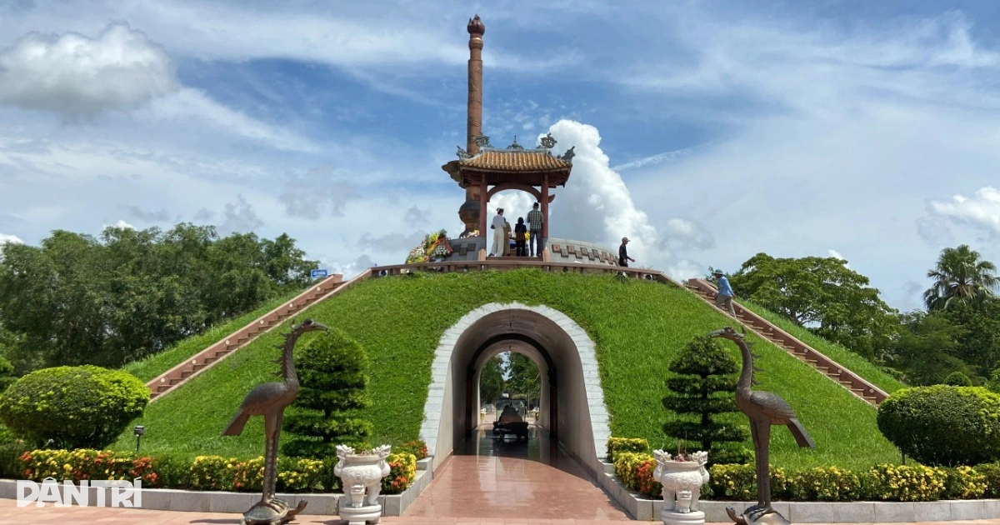
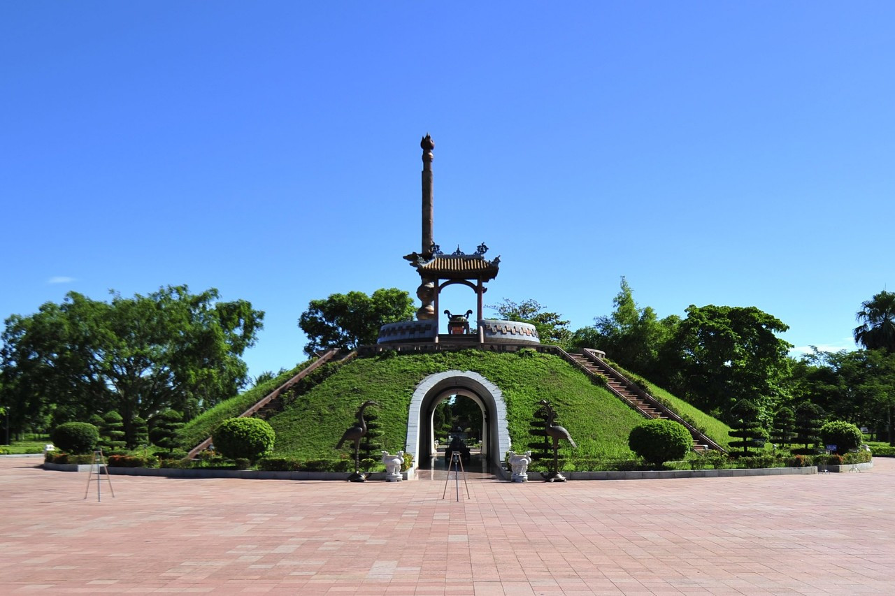
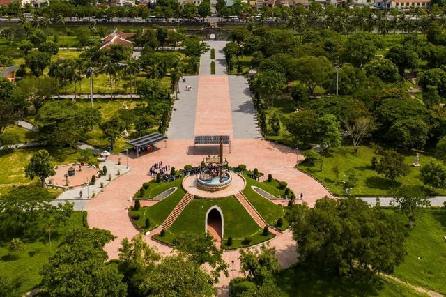
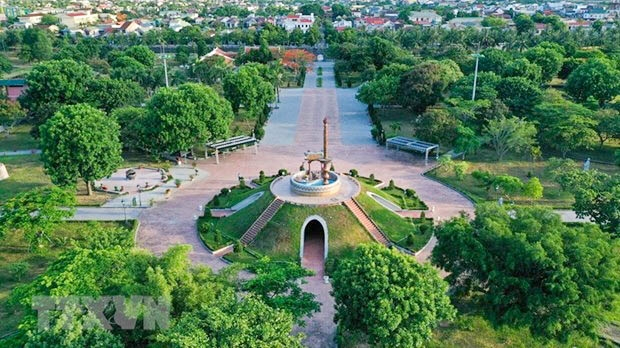
Nguồn ảnh: vov.vn, dantri.com, viptrip.vn, sovaba.travel, baodantoc.vn